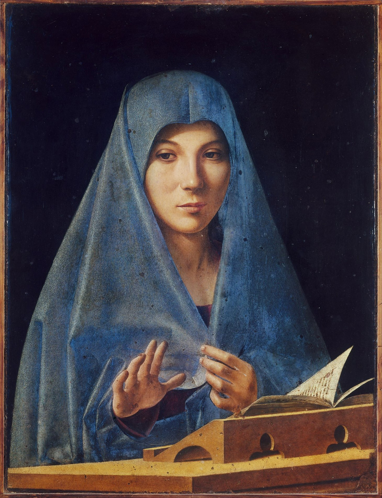

Le livre que Luc ne mentionne pas

Suivez le contour du volume. Il repose encore ouvert devant Marie, à portée de main.
Suivez le bord de la page jusqu’à la pointe. Sa position rend perceptible le bref instant où la lecture peut avoir été suspendue.
Dans le récit de Luc (1, 26–38), Gabriel salue Marie. Elle s’interroge sur le sens de cette salutation, demande comment l’annonce peut s’accomplir, puis donne son assentiment. Le livre ouvert devant elle appartient à la tradition picturale de l’Annonciation. Il permet au peintre de suggérer ce qui occupait Marie avant la scène racontée par l’Évangile.
À Palerme, Antonello précise cet avant par un détail. Une feuille se dresse au-dessus des autres. Le volume reste ouvert au point où la lecture a pu s’interrompre. Le tableau tient ainsi ensemble l’instant de l’annonce et l’activité ordinaire dont elle vient de détourner Marie.